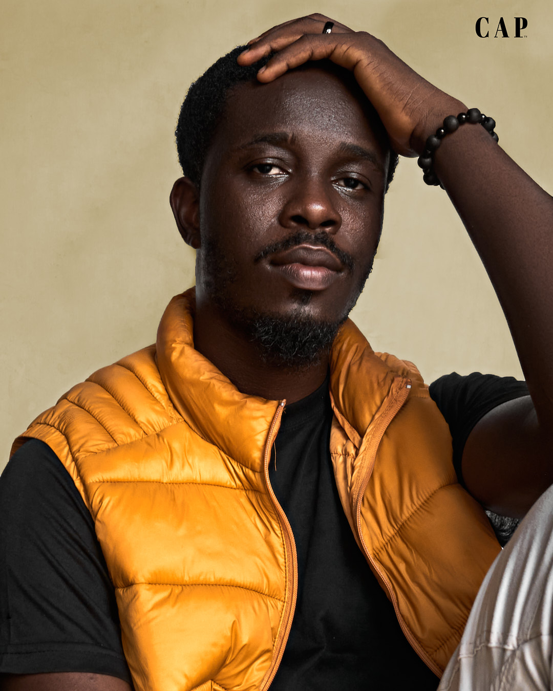

Welcome to the student portal of Caleb Chidiebube Alaebo, I hope you find what you came to look for, by the way, don't forget to Laugh, Love and Live. Click here to contact me.
I was born and raised in Onitsha, Anambra state where I grew up in a community that valued football and christianity and always had good music playing around the house. These threads of family, football, and music have defined my life path and experiences. I am a professional Photographer in tandem with being a very skillful and disciplined midfielder. I am currently studying for a Bachelor of Science degree in Software Engineering at MIVA Open University. I am married to an amazing, beautiful and smart woman and we have a wonderful son.